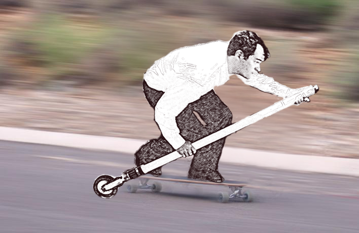

◦ Electrical Propulsion
◦ Industry 4.0 (AR & IoT)
◦ Electro-Mechanical Systems
Electrical Propulsion
In the early 2000s I was volunteering on a farm west of Boston and helped them electrify their 1950's-era Alice
Chalmers "G" cultivating tractor.

Ten years later, a friend had an idea to build a stick with a wheel to propel him along on his skateboard.

Last winter the 50-year-old engine on my sailboat seized, and I replaced the propulsion system with a 10 kW
electric motor. This page contains some of what I've learned from these experiences and others, and details of
that conversion.